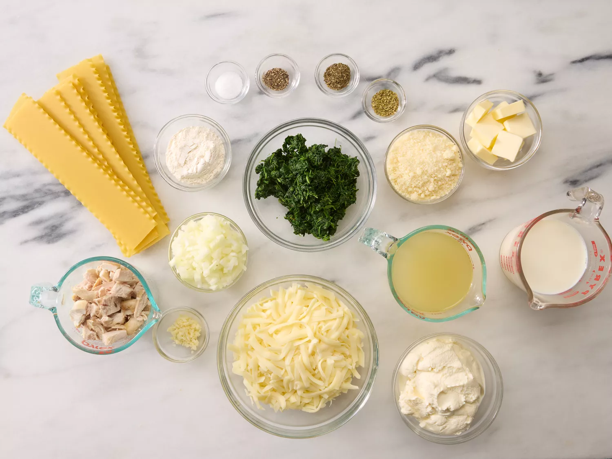
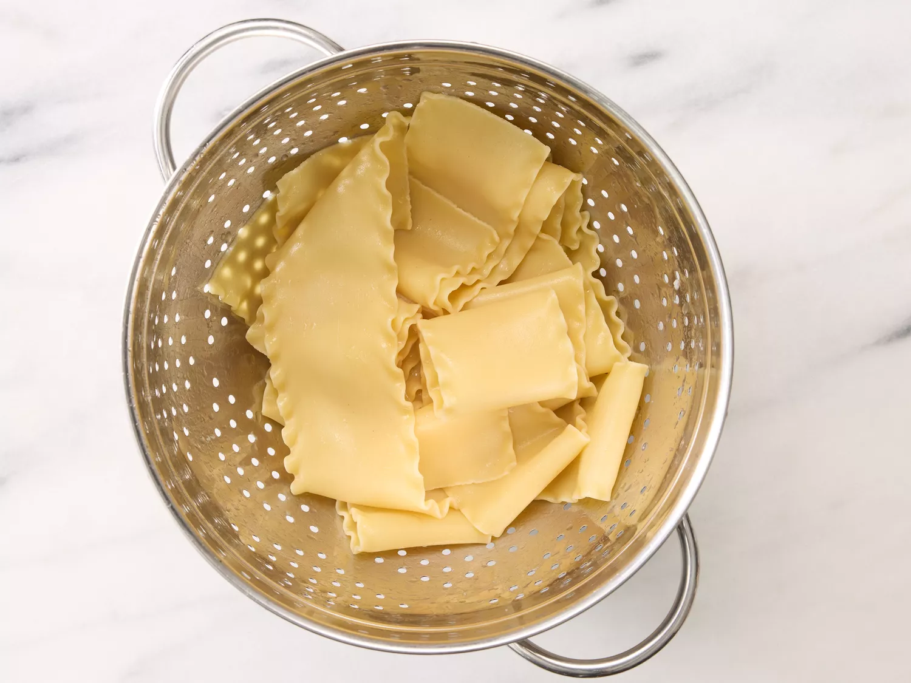
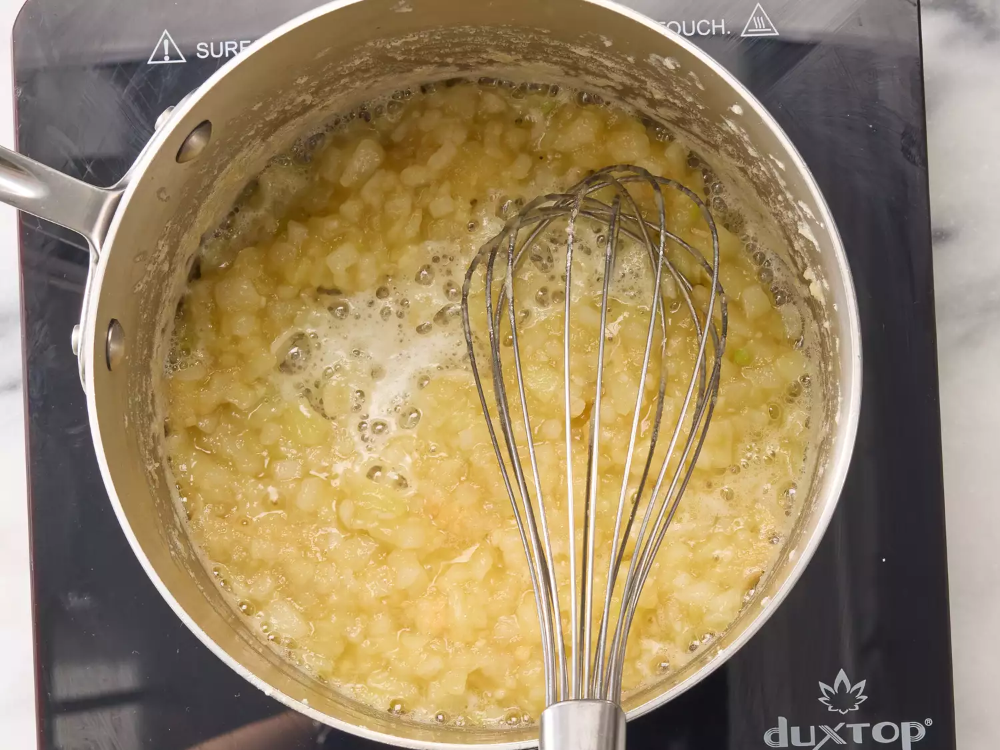
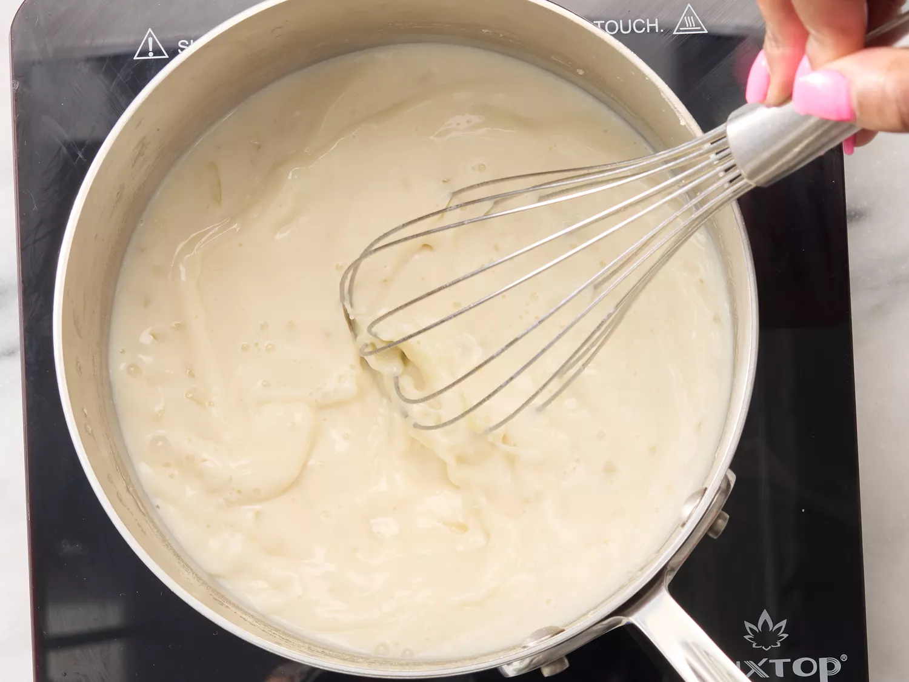
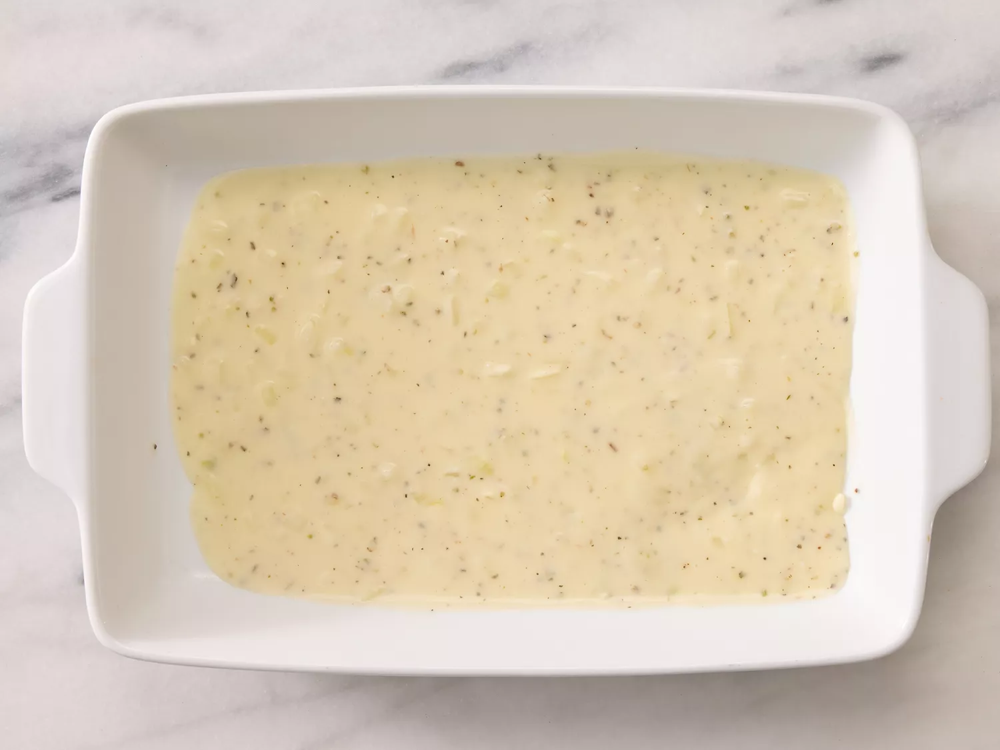
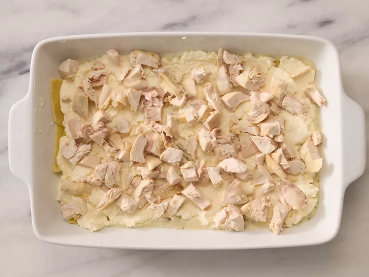
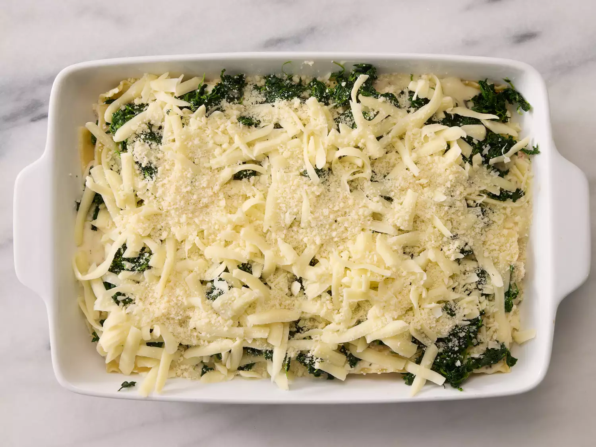
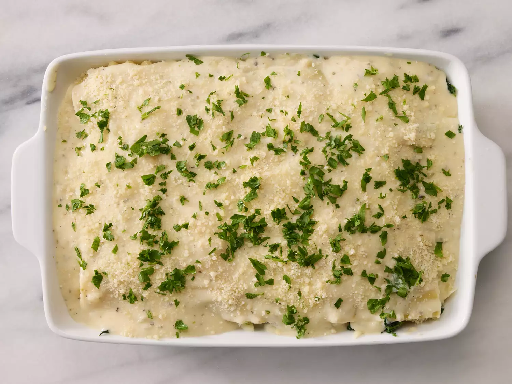
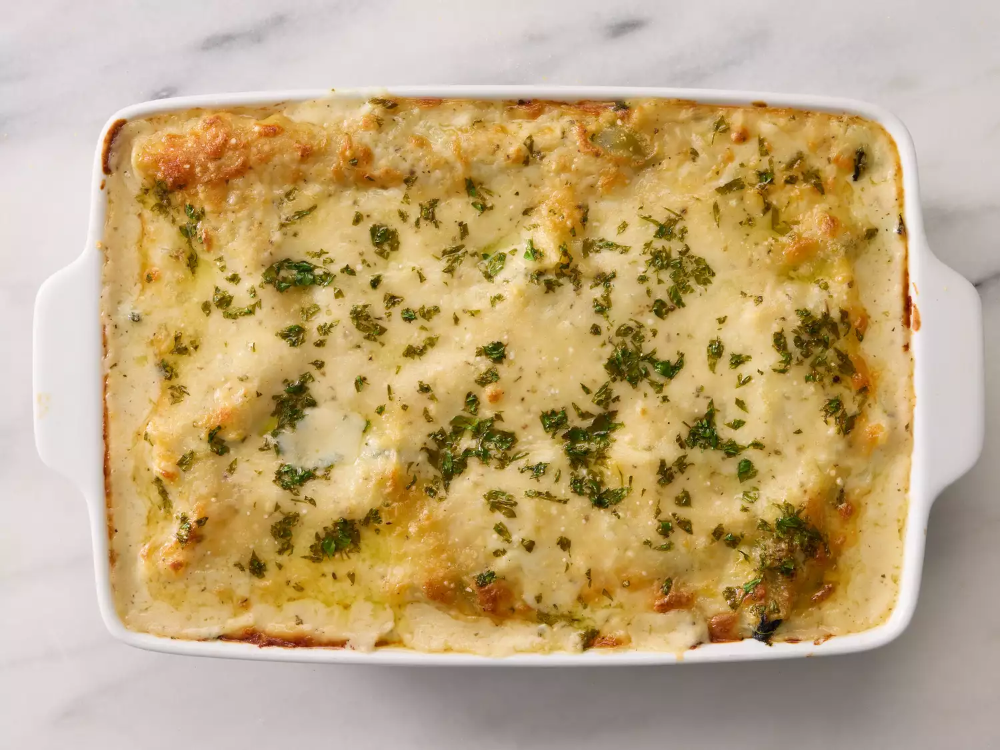

Gather all ingredients and preheat the oven to 350 degrees F (175 degrees C).
Bring a large pot of lightly salted water to a boil. Add lasagna noodles and cook for 8 to 10 minutes or until al dente; drain and rinse with cold water.
Meanwhile, melt butter in a large saucepan over medium heat; stir in onion and garlic. Whisk in flour until lightly browned and onion is tender, about 2 minutes. Add chicken broth, milk, and salt; cook, whisking continuously, for 1 minute.
Stir in 2 cups mozzarella and 1/4 cup Parmesan until well combined. Season with basil, oregano, and black pepper; remove from heat and set aside.
Spread 1/3 of the sauce mixture in the bottom of a 9x13-inch baking dish.
Layer with 3 lasagna noodles, ricotta, and chicken.
Arrange 3 lasagna noodles over the chicken and layer with 1/3 of the sauce mixture, spinach, remaining 2 cups mozzarella, and 1/2 cup Parmesan.
Arrange remaining noodles over cheese and spread remaining sauce evenly over noodles. Sprinkle with parsley and remaining 1/4 cup Parmesan.
Bake in the preheated oven for 35 to 40 minutes.
Serve and enjoy!